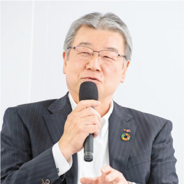
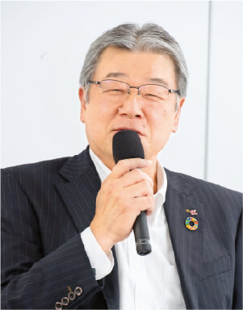
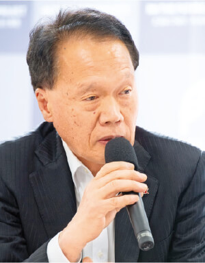

「軸とスパイラルアップ」で、持続可能な未来へ

2023年3月30日、りんかい日産建設は経営者と社員の対話集会である「タウンホールミーティング」を行いました。テーマは「サステナビリティ経営に舵を切り始めた当社は、具体的に何を目指すべきか」。「SDGs勉強会（全15回）」に参加した社員7名と代表取締役社長の前田祐治、取締役専務執行役員の永尾秀司が、勉強会の講師を務めた岸和幸先生の進行のもと、約二時間半にわたり意見を交換しました。

SDGs勉強会
サステナビリティ経営における重要な取り組みの一つとして、2021年7月から2023年1月までの約1年半にわたり、セミナー＆ワークショップ形式による「SDGs勉強会」を定期的に開催しました。

| 実施時期 | 回 | 講義内容 | |
|---|---|---|---|
| 2021年 | 7月 |
第1回 |
ゴール設定＆バックキャスト |
8月 |
第2回 |
社会・市場の認識＆整理（ステークホルダー） |
|
10月 |
第3回 |
社会・市場の認識＆整理（バリューチェーン） |
|
10月 |
第4回 |
外部・内部環境の分析① |
|
11月 |
第5回 |
外部・内部環境の分析②／マテリアリティの検討 |
|
12月 |
第6回 |
KPIの設定方法（SDGsのモニタリング） |
|
| 2022年 | 1月 |
第7回 |
脱炭素・再生可能エネルギーの戦略化①（経営リスク） |
2月 |
第8回 |
脱炭素・再生可能エネルギーの戦略化②（取り組み） |
|
3月 |
第9回 |
脱炭素・再生可能エネルギーの戦略化③（省エネ・創エネ・畜エネ） |
|
4月 |
第10回 |
生物多様性 |
|
6月 |
第11回 |
人権デューデリジェンス |
|
8月 |
第12回 |
将来構想STEP1 2030年に向けた構想 |
|
10月 |
第13回 |
将来構想STEP2 2030構想のビジネスモデル化 |
|
12月 |
第14回 |
価値創造マップSTEP1 部門単位 |
|
| 2023年 | 1月 |
第15回 |
価値創造マップSTEP2 「RN価値創造マップ」作成 |
[第1部]
SDGs勉強会で得たこと・
共有したいこと
第1部では「SDGs勉強会」でサステナビリティ経営とは何かを学んだ社員が、特に大切だと感じたことや、社内に共有したいことについて一人ずつ発表。それに対し、前田社長と永尾専務が質問やコメントをしました。


［ファシリテーター］
キシエンジニアリング株式会社 代表取締役
東京都市大学・教育開発機構
「ひらめき・こと・もの・ひと」づくり プログラム 特任教授
岸 和幸
代表取締役社長
前田 祐治

［土木チーム］
小澤 義之
［土木チーム］
細川 徹也
社会課題の解決には、知識の社内共有が不可欠
─ 小澤 ： 勉強会では、企業活動におけるSDGsへの取り組みやカーボンニュートラルの必要性などを学びました。CO2の削減については、当社も船舶の動力の電力化などを通じて貢献できるかもしれません。また、SDGsでは環境面だけでなく、人権面などにも多くの課題があります。これらを解決するには経営戦略が重要だと感じました。
─ 前田社長 ： 勉強会での学びを企業活動に活かすには、全社員が共通の認識を持つ必要がありますね。会社としてはCSR担当役員が中心となって社員への啓発に力を入れていますが、小澤さんをはじめ今日ここに集まった皆さんには、勉強会で得た経験と知識を、業務を通じて水平展開していただければと思います。
─ 小澤 ： そうですね。勉強会での学びを社内に共有する機会をつくり、みんなが問題意識をもって業務に取り組むことが必要だと思います。
取締役専務執行役員
永尾 秀司

10年後の変化を見据えて対応策を考えたい
─ 細川 ： 勉強会では地球温暖化等に関連したさまざまな問題について学ぶ機会があり、建設業界においてもいろんな影響が生じると感じました。大雨による水災害や地震が多発しているため、社会インフラの整備が急務となっていますが、人材面においては、今後ベテラン技術者の大量離職が見込まれ、それを補う若手の技術者も不足している問題もあります。これらの問題に対し、ただ目先の業務だけにとらわれることなく、10年後を見据えて、今後どのような変化が起こり得るか、その変化にどのように対応していくべきかといった問題意識を共有できればいいと思います。
─ 永尾専務 ： 10年後を見据えて動くのは大切ですね。現在、社長を中心に10年後の長期計画を早急に作成すべく動いているところです。
─ 細川 ： 新型コロナ感染症の蔓延やウクライナ情勢による資材高騰など予測不可能なことも起きているので、こういった事態にも柔軟に対応できる企業をともに目指せればと思います。

［土木チーム］
佐藤 友樹
事業を通じた社会貢献と日常的な取り組みの両立を
─ 佐藤 ： 私は土木現場での業務を担当していますが、現場ではSDGsへの貢献に限界があると感じています。建設廃棄物の削減やアイドリングストップには取り組んでいますが、これ以上何ができるかがイメージできません。どのように取り組むべきでしょうか。

─ 永尾専務 ： もう少し広い視点が必要だと感じました。土木の仕事は公共インフラや災害復興関連が多く、SDGsの一環と言えます。胸を張って業務に取り組んでください。またSDGsは日常の延長にあると思います。小さなことでも「自分事」として継続することが重要ではないでしょうか。
─ 佐藤 ： おっしゃる通りですね。社会レベルまで視野を広げつつ、日常的な部分にもしっかり目を向けて行動したいと思います。
［建築チーム］
宮村 星耶
専門用語の意味を深く理解した上で取り組むべき
─ 宮村 ： 勉強会では、「SDGs経営」を実務レベルに落とし込む必要性を感じました。取り組むにあたっては、建築業界における外的要因の共有が必要です。また、その解決手段として、設計の分野であればCASBEE※1やZEB※2などに関する知識を深めることも重要です。

─ 前田社長 ： CASBEEとZEBは、設計業務に欠かせない要素になりつつありますね。今後は施主にプレゼンする機会が今まで以上に増えると思いますが、まずはこれらのツールについてしっかりと内容を理解し把握した上で、プレゼンに臨むことが大切です。また、これらを当社のツールとしてより効果的に活用していくには、設計担当者だけでなく営業や現場の社員が共通認識を持つ必要があります。当社の経営理念を実践する上でも大変重要なので、あらゆる機会を通じて、全社員に意識付けをしていただきたいです。
─ 宮村 ： 私も同感です。言葉の意味を建築部門だけで使うのではなく、他の部門との共通認識したいと思います。
※1 CASBEE：建築環境総合性能評価システム。建築物の環境性能で評価し格付けする手法。省エネルギーや環境負荷の少ない資機材の使用といった環境配慮だけでなく、室内の快適性や景観への配慮なども含めた建物の品質を総合的に評価する。
※2 SZEB：Net Zero Energy Building（ネット・ゼロ・エネルギー・ビル）。快適な室内環境を実現しながら、建物で消費する年間の一次エネルギーの収支をゼロにすることを目指した建物のこと。

［建築チーム］
伏見 菜緒
マイナス要因はプラスとして捉えることもできる
─ 伏見 ： 企業活動は「地球あってのもの」と学びました。例えば地球温暖化による気温上昇は災害リスクを高めるだけでなく、建設工事等の効率低下を招きます。一方、これらのマイナス要因は、新技術などの開発につなげることができればプラスと捉えることもできます。

─ 永尾専務 ： 「マイナス要因はプラス」とは、おもしろい表現ですね。
─ 伏見 ： SDGsを学ぶことで視野や発想の幅が広がりました。最近は「この仕事は環境配慮につながる」「この取引先の知識と当社の知識を組み合わせれば、新しいアプローチができるのではないか」といったことをよく考えるようにしています。
─ 永尾専務 ： 伏見さんの所属する環境・再生エネルギー部は、事業を通じて脱炭素に貢献できる重要な部署の一つです。学びを積極的に活かしてがんばってください。
［支援チーム］
山本 慎太郎
コミュニケーションが持続的成長の第一歩
─ 山本 ： 私が最も重要だと感じたのは「バックキャスト」です。今の状況の結果として未来があるという捉え方ではなく、思い描く未来像に向かって今何をすべきかを考えることが大切だと知りました。また、企業が持続的に成長するには、コミュニケーションが大切だと感じました。勉強会での学びや社会課題などを共有しやすくなります。

─ 前田社長 ：そうですね。社会情勢の急速な変化に伴い、建設業界は今までやってこなかったことに取り組む必要が生じています。対応のための方針や施策を順次打ち出していますが、より確実に対応するには、社員全員が共通認識を持つ必要があります。そのためには、山本さんの発表にもあったように、各部門間、社員間、そしてステークホルダーとの間で、より密接なコミュニケーションが必要だと思います。社員一人ひとりが、可能な範囲で良いので積極的にコミュニケーションを取るようにすれば、大きな成果につながるのではないでしょうか。
─ 山本 ： はい。個人的にはその第一歩として、社内での挨拶が大切だと思います。

［支援チーム］
小幡 友康
生物多様性もバックキャストで考えることが大切
─ 小幡 ： 私が得た学びは「生物多様性」です。地球の歴史の中で、初めて人類が要因で絶滅が進んでいます。1975年から2000年までの間に、年間平均４万種の生物が絶滅したそうです。地球環境と深く関わる建設を生業とする当社にとって、他人事ではないと思います。これを防ぐには、地球環境の構造を理解すること、そして、SDGsの基本的な考え方である「バックキャスト」で考えることが重要です。
─ 前田社長 ： おっしゃる通りだと思います。ただし、一方で急速に変化していく社会の中では、バックキャストの視点で現在を考えるだけでなく、節目事に現状に合わせて見直すことも重要です。一度決めた方針であっても、現状に見合わなくなったら見直し、必要ならば躊躇せず変更すべきです。常に自分の周囲の状況を把握し、時代の変化に乗り遅れないようにしてください。
第1部 まとめ
「両利きの経営」と「自分事化」でサステナビリティの実現を
─ 岸先生：皆さん、発表とコメントをありがとうございました。お二人からバックキャスト視点が大切という意見をいただきましたが、一方で急速な変化への対応力に言及される方もいらっしゃいました。両方とも必要不可欠だと言えます。
皆さんはダーウィンの「適者生存の法則」をご存知でしょうか。あらゆる生命は環境の変化の中で進化し、生態系に適応できる種だけが生き残ります。企業にも同じことが言えると思います。今後は今までと異なる考え方で社会課題と向き合い、異なる価値同士を組み合わせ、新たな事業を生み出していくことのできる企業だけが生き残ります。

また、既存の事業をさらに深化させて、より専門的にしていくことが求められています。この新規事業と既存事業を両立させる「両利きの経営」が、サステナビリティ経営には不可欠です。
第2部では、皆さんにこの「経営」の部分に対する考えについて、チームごとに発表していただきます。